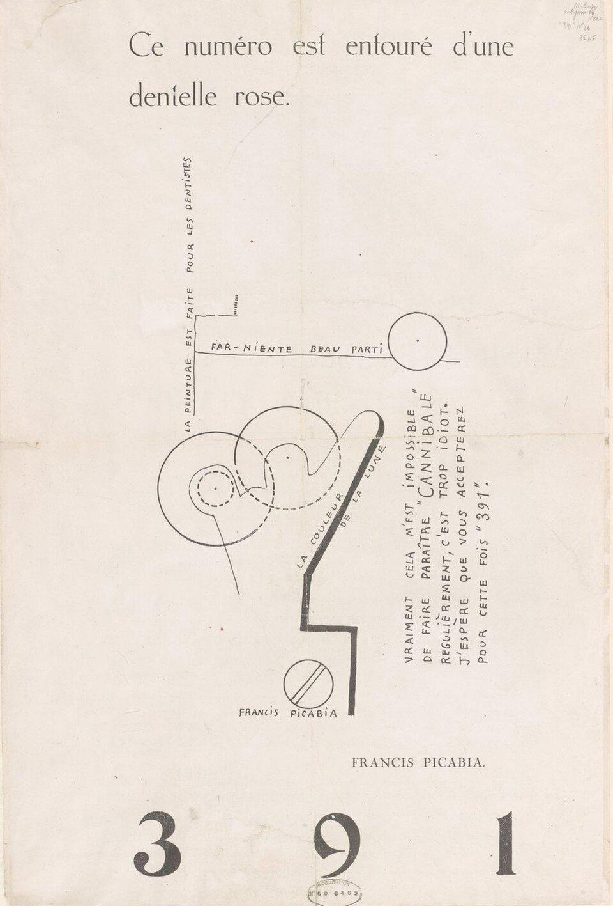

References / Editorial / 400
391, no. 13: “Ce numéro est entouré d’une dentelle rose”, 1920
Francis Picabia opens an issue of his Paris Dada magazine 391 with a mock machine drawing whose parts carry hand-lettered phrases at several angles.
- Source
- Gallica, Bibliothèque nationale de France: 391, no. 13, July 1920
- Creator
- Francis Picabia
- Made
- July 1920
- Style
- Dada (agent-proposed, not yet reviewed by a person)
- Moods
- Ironic, irreverent, mechanical
- Evidence
- Inspected the Commons copy of the Gallica scan (Commons, 906 × 1337 px original; the stored 960 px Commons thumbnail is slightly upscaled). The physical copy is the BnF copy digitized on Gallica, ark bpt6k891104w, view f9. The Gallica page itself was not opened.
- Reviewed
- Rights
- Open license, stored. License: public domain. Rights policy

Context
Commons records the page as Ce numéro est entouré d’une dentelle rose, from 391, no. 13, July 1920, taken from Gallica (BnF), with the license PD-old-auto-expired (death year 1953). Commons.
Picabia published 391 from 1917 to 1924, in Barcelona, New York, Zürich, and Paris. Wikipedia: 391 (magazine)).
Observed
- The headline “Ce numéro est entouré d’une dentelle rose.” (This issue is surrounded by pink lace) is set in a light roman at the top.
- A drawing in thin and heavy black lines shows circles, a crank-shaped bar, dashed circles, and a circle with a slash, like a parody of a machine diagram.
- Hand-lettered capitals follow the lines of the drawing: “LA PEINTURE EST FAITE POUR LES DENTISTES” runs vertically, “FAR-NIENTE BEAU PARTI” runs horizontally, and “LA COULEUR DE LA LUNE” runs along the diagonal bar.
- A block of hand-lettered capitals runs vertically at the right: “Vraiment cela m’est impossible de faire paraître ‘Cannibale’ régulièrement, c’est trop idiot. J’espère que vous accepterez pour cette fois ‘391’.”
- “FRANCIS PICABIA.” is set in small roman capitals. The title “3 9 1” is set at the foot in very large, widely spaced high-contrast Didone numerals.
- The paper is plain off-white, with folds, a round library stamp at the bottom, and pencil notes at top right. Only black ink is used.
Why it belongs
The page shows the Paris branch of Dada: the disorder comes from the joke machine and the angled phrases, not from a case of mixed type. The huge Didone numerals against the hand lettering give the clash of faces.
Borrow
Let short labels follow the lines of a drawing, so the text turns with the shapes.
Set a short title in very large, widely spaced Didone numerals at the foot of the page.
Measured
Machine-extracted by tools/image-traits.py on . Full measurement.
- Mean chroma
- 0.07
- Palette
- #f0e6dd 92%
- #e7dccf 2%
- #dbd1c7 1%
- #bcb3aa 1%
- #ccc3ba 1%
- #a89f97 1%
- #6b6560 1%
- #90877f 1%

